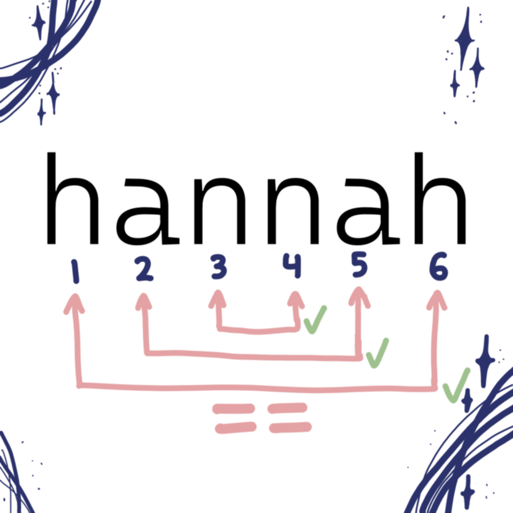

Home
Projects
Resume
About Me
Contact Me
This is my Binary Search Tree Implementation in C++. Binary Search Trees allow for faster retrival of data by creating an upperbound runtime of O(logn).
This is my HTML validator lab. I wrote the isValid method. This loads a queue of HTML tags and checks that each opening tag has a corresponding closing tag by utilizing a stack. (Done in C++)
This is my implementation of Huffman coding in C++. Huffman coding allows large texts to be compressed in its own alphabet of binary, my code compresses and decompresses this text. It uses files, maps, binary trees, arrays, and more.

Here is my palindrome checker program! Dont be fooled though, this is not in Python or C++ ... its in MARS assembly.
This website! I wrote this website entirely from HTML and CSS. I also drew/designed each digital image or logo in this website. Although, the photography is not mine. Inspect to learn more!